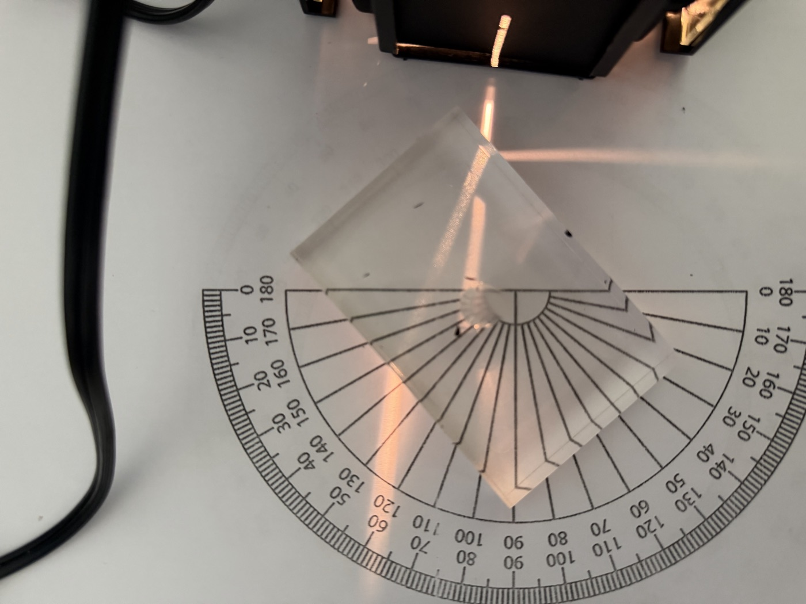
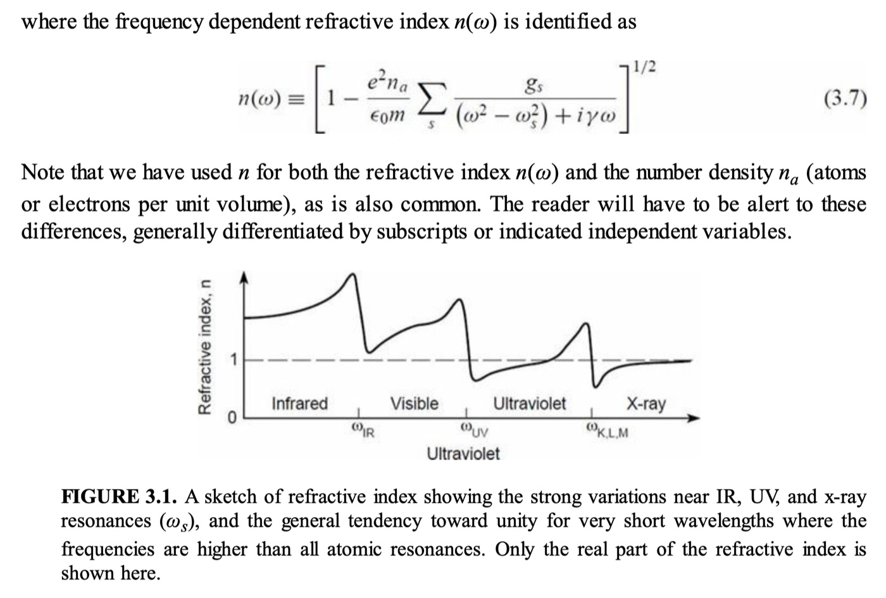

The mirror from Light Box becomes a transparent block. Most students already know that light "slows down" in a new medium — the explanation is what takes work.
This is Part I of a two-day sequence; Total Internal Reflection follows on day two. I begin by returning to Light Box, Part II. There, the mirror reflected the light. Now I replace it with a transparent material and ask what they expect the light to do when it can pass through. I demonstrate the basic light-box and lens setup and establish what they are investigating before the groups begin.
Students take notes on the new language, including refraction, refractive index, and Snell's law. I sometimes make a short historical detour through Snell and Descartes. Then they manipulate the lenses, record what they notice, and compare ray paths. It is exploratory, but not completely unguided: I move between groups, ask questions, and pause the class when a useful pattern appears. We build the explanation from the ripple tank and light box lessons: the source fixes the frequency, the medium changes the propagation speed, the wavelength therefore changes, and the geometry of the wavefront explains the change in direction.
Most groups already know that light "slows down" in a different medium. The correct answer arrives quickly; the explanation does not. Students struggle to say what happens to the wavefront, wavelength, and frequency, or why the frequency stays fixed. The challenge is moving from a remembered statement to the physical structure underneath it. The earlier ripple-tank and light-box lessons give them the pieces to justify what they see here.
Some students want to see the derivation of Snell's law and where it comes from. I point them to any good physics textbook rather than spend class time on the proof. My go-to is Halliday, Resnick, and Walker's Fundamentals of Physics, the book I used at the University of Costa Rica and still my favourite. I prefer the fifth edition; it is probably still in the UCR library.
I also show them an excerpt from David Attwood's Soft X-Rays and Extreme Ultraviolet Radiation. I use it as a TOK conversation about models. The definition \(n = c/v\) is useful here, but Attwood's \(n(\omega)\), its resonances, and regions with \(n < 1\) show why the appropriate model depends on what kind of wave speed and material response we are describing.

